ข้อแนะนำก่อนเริ่มเล่น
ใช้ SEARCH (ค้นหา) กับตู้ หีบสมบัติ สิ่งของ และจุดที่ดูผิดสังเกตอยู่เสมอ เพราะอาจมีไอเทมหรือเงื่อนไขสำคัญสำหรับการดำเนินเนื้อเรื่อง
ก่อนเข้าสู่ดันเจียนหรือศึกบอส ควรซื้ออาวุธ ชุดเกราะ และไอเทมฟื้น HP / MP ให้เพียงพอ
บทสรุปนี้ใช้ชื่อสถานที่ ตัวละคร คำสั่ง และไอเทมเป็นภาษาอังกฤษ พร้อมคำแปลภาษาไทยในวงเล็บ เพื่อให้อ้างอิงกับชื่อภายในเกมได้สะดวก
1. ระบบการต่อสู้
ก่อนเริ่มการต่อสู้แต่ละครั้ง เกมจะให้จั่ว Tarot (ไพ่ทาโรต์) ก่อนเข้าสู่การเลือกคำสั่งของสมาชิกในทีม
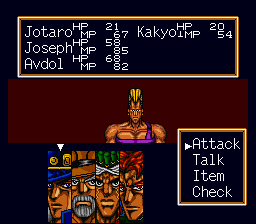
หน้าจอต่อสู้จริง — แถบสเตตัส HP/MP ของแต่ละคนกับเมนูคำสั่งฝั่งขวา
| คำสั่ง | รายละเอียด |
|---|
| ATTACK (โจมตี) | โจมตีเพื่อลดค่า HP ของศัตรู |
| SPEAK (พูดคุย) | ใช้กับศัตรูเพื่อลด MP หรือใช้กับเพื่อนร่วมทีมเพื่อฟื้น MP |
| ITEM (ไอเทม) | ใช้ไอเทมฟื้น HP, MP หรือแก้สถานะผิดปกติ |
| SEARCH (ค้นหา) | ตรวจสอบวัตถุ จุดสำคัญ และหีบสมบัติ รวมถึงปลดล็อกคำสั่ง TACTICS |
| TACTICS (กลยุทธ์) | ใช้ความสามารถพิเศษระหว่างการต่อสู้ |
TACTICS (กลยุทธ์)
| ทักษะ | รายละเอียด |
|---|
| FLASH (โจมตีจุดอ่อน) | โจมตีจุดอ่อนของศัตรู ใช้เป็นเงื่อนไขสำคัญในศึกเนื้อเรื่องหลายครั้ง |
| GUTS (ฮึดสู้) | เพิ่มพลังโจมตีชั่วคราว เหมาะกับศัตรูและบอสที่มี HP สูง |
| ESCAPE (หลบหนี) | ออกจากการต่อสู้ ใช้เฉพาะศึกที่เนื้อเรื่องกำหนด |
ความหมายค่าสเตตัสแต่ละตัว
| ค่า | ชื่อเต็ม | ผลของค่านี้ |
|---|
| LV | Level | เพิ่มทุกสเตตัส เก็บ EXP ครบตามเกณฑ์จะเลื่อนเลเวลอัตโนมัติ |
| HP | Health Points | เลือดกาย ลดเหลือ 0 = ตาย ใช้ ATTACK เพื่อลด HP ศัตรู |
| MP | Mental Power | เลือดใจ ลดเหลือ 0 = ตาย ใช้ SPEAK เพื่อลด MP ศัตรู |
| AT | Attack | เพิ่มดาเมจกายภาพเมื่อใช้ ATTACK |
| DF | Defense | ลดดาเมจกายภาพที่ได้รับ |
| ST | Stress | เริ่มที่ 50 ลดได้ด้วยไอเทมบางชนิด ค่ายิ่งสูงยิ่งทำให้ Biorhythm แปรปรวนเร็วขึ้น |
| JG | Judgment | ลดจำนวนเทิร์นที่ต้องใช้ CHECK ก่อนจะปลดล็อก INSPECT |
| AC | Action | ลดจำนวนเทิร์นก่อนจะเข้าถึงคำสั่ง ATTACK ได้หลังเริ่มต่อสู้ |
| CO | Concentration | เพิ่ม MP ที่ฟื้นเมื่อใช้ SPEAK กับตัวเอง |
| CP | Cooperation | เพิ่ม MP ที่ฟื้นเมื่อใช้ SPEAK กับเพื่อนร่วมทีม |
| PS | Persuasion | เพิ่มดาเมจทางใจเมื่อใช้ SPEAK |
| $ | Money | เงินที่ถืออยู่ |
| EX | Experience | EXP ปัจจุบัน เทียบกับ EXP ที่ต้องใช้เพื่อเลื่อนเลเวลถัดไป |
| Fate | โชคชะตา (จุดสีน้ำเงิน) | เพิ่ม EXP ที่ได้รับ + อัตราหลบหลีก |
| Body | ร่างกาย (จุดสีเหลือง) | ลดดาเมจกายภาพที่ได้รับ |
| Mind | จิตใจ (จุดสีแดง) | ลดดาเมจทางใจที่ได้รับ + เพิ่มอัตราฟื้น MP |
จุดสีที่ติดมากับตัวละคร/การ์ดบางใบ (Fate/Body/Mind) เป็นค่าเสริมที่ซ้อนอยู่บนสเตตัสหลักด้านบนอีกที
2. เนื้อเรื่อง
Japan (ญี่ปุ่น)
Jotaro's House (บ้านของ Jotaro)
- ใช้ SPEAK กับ Joestar (โจสตาร์) และ Avdol (อับดุล)
- ใช้ SEARCH ที่ตู้ทั้งสองฝั่งเพื่อเก็บไอเทม
- ออกจากบ้าน เดินไปทางตะวันออกเพื่อมุ่งหน้าสู่ School (โรงเรียน)
On the Way to School (ระหว่างทางไปโรงเรียน)
- ต่อสู้กับ Bad Student (นักเรียนเกเร) 3 คน แต่ละคนมี HP 30
- ให้ Jotaro ใช้ FLASH
- เดินตะวันออก แล้วขึ้นเหนือไปยังพื้นที่ถัดไป เดินตะวันออกต่อจนถึงบันไดยาว
- พบ Hierophant Green (ไฮเอโรแฟนท์ กรีน) ซึ่งจะหนีไปเองในเทิร์นที่ 3
School - Infirmary (โรงเรียน: ห้องพยาบาล)
- เดินซ้ายเพื่อสู้กับ Female Doctor (แพทย์หญิง) ให้ Jotaro ใช้ FLASH
- หลังชนะ จะต้องต่อสู้กับ Kakyoin (คาเคียวอิน)
- เมื่อชนะ Kakyoin จะเข้าร่วมทีม
- ค้นหาตู้ทั้งสองฝั่ง แล้วผ่าน Sliding Door (ประตูเลื่อน) ออกสู่โถงทางเดิน
School - Classroom (โรงเรียน: ห้องเรียน)
- ต่อสู้กับ Bad Student 3 คน ให้ Jotaro และ Kakyoin ใช้ FLASH
- เดินซ้ายต่อเพื่อพบ Tower of Gray (ทาวเวอร์ ออฟ เกรย์)
- ให้ Kakyoin ใช้ FLASH แล้ว Tower of Gray จะหนีในเทิร์นที่ 3
School - Locker Room (โรงเรียน: ห้องล็อกเกอร์) และ Rest Room (ห้องน้ำ)
- ใน Locker Room พบ Tower of Gray อีกครั้ง ให้ Kakyoin ใช้ FLASH และศัตรูจะหนีในเทิร์นที่ 3
- ใช้ SEARCH ที่ตู้ล็อกเกอร์ 2 ตู้เพื่อเก็บไอเทม
- ไปยัง Rest Room แล้วสู้กับ Tower of Gray HP 100 โดยให้ Kakyoin ใช้ FLASH
Bookshop (ร้านหนังสือ)
- กลับบ้านของ Jotaro แล้วเข้า Kitchen (ห้องครัว) เพื่อให้ Joseph (โจเซฟ) และ Avdol เข้าร่วมทีม
- ออกจากบ้าน เดินไปที่ Gate (ประตูทางออก) และกดลงหน้าเสาที่มีลูกศรเพื่อไปยังเขตร้านค้า
- ควรซื้ออาวุธ ชุดเกราะ และไอเทมฟื้นฟูให้พร้อม
- เข้า Bookshop แล้วต่อสู้กับ Polnareff (โปลนาเรฟ)
- ให้ Avdol และ Kakyoin ใช้ FLASH หลังชนะ Polnareff จะเข้าร่วมทีม
- ค้นหาหีบด้านขวาในห้องถัดไปเพื่อรับ Map of the Strange Mansion (แผนที่คฤหาสน์ประหลาด)
Strange Mansion (คฤหาสน์ประหลาด)
- สู้กับ Vampire (แวมไพร์) HP 40 แล้วเดินขวาเพื่อลง B1
- ที่ B1 เดินขวาสุดและลงไป B2
- ที่ B2 เดินซ้าย สู้กับ Vampire 2 ตัว ตัวละ HP 40 แล้วลงไป B3
- ที่ B3 เดินซ้ายสุดและลงไป B4
- ที่ B4 เดินไปทางซ้ายสุดจนถึงบันได แล้วสู้กับ Dark Blue Moon (ดาร์ก บลู มูน) HP 100
- กลับเข้าไปในคฤหาสน์ เดินขวาสุดลง B1 จากนั้นเดินซ้ายสุดผ่านประตูบานคู่
- เดินขวาตามเส้นทาง ลงไป B2 และผ่านประตูบานคู่ด้านขวา
- ต่อสู้กับ Strength (สเตร็งธ์) HP 150
- เดินขวาผ่านประตูบานคู่เพื่อเข้าสู่ Airplane (เครื่องบิน)
Inside the Dream World (ภายในโลกแห่งความฝัน)
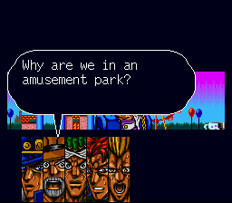
"Why are we in an amusement park?" — บรรยากาศประหลาดของโลกแห่งความฝัน
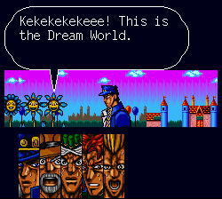
"Kekekekekeeee! This is the Dream World." — เสียงหัวเราะของ Dio ก้องอยู่ในโลกความฝัน
- บนเครื่องบิน ให้พูดคุยกับผู้หญิงที่อุ้มเด็กเพื่อเข้าสู่ Dream World (โลกแห่งความฝัน)
- Star Platinum (สตาร์ แพลทินัม): ให้ Kakyoin ใช้ ESCAPE
- Magician's Red (เมจิเชียนส์ เรด): ให้ Kakyoin ใช้ ESCAPE
- Death Thirteen (เดธ เธอร์ทีน) HP 70: ให้ Kakyoin ใช้ FLASH
High Priestess (ไฮพรีสเตส)
- กลับสู่เครื่องบิน เดินไปที่ Toilet (ห้องน้ำ) และใช้ SEARCH กับลูกบิดประตู
- สู้กับ High Priestess ครั้งแรก ให้ Kakyoin ใช้ FLASH
- ไปยัง Cockpit (ห้องนักบิน) เพื่อสู้กับ High Priestess HP 180
- เริ่มด้วย FLASH ของ Kakyoin จากนั้นใช้ SPEAK ฟื้น MP ตามความจำเป็น และโจมตีต่อเนื่องจนชนะ
India (อินเดีย)
Hotel (โรงแรม)
- ซื้ออุปกรณ์ใหม่ให้ทีมก่อน จากนั้นเข้า Hotel
- พูดคุยกับพนักงานหลังเคาน์เตอร์เพื่อรับ Room Key (กุญแจห้องพัก)
- ใช้ Elevator (ลิฟต์) ไปยัง Room 201 (ห้อง 201)
- สู้กับ Ebony Devil (เอบอนี เดวิล) 2 ครั้ง โดยศัตรูจะหนีในเทิร์นที่ 3 ทุกครั้ง
- ค้นหาลิ้นชักในห้อง 201 เพื่อเก็บไอเทม
- ไป B1 สู้กับ Ebony Devil HP 190 แล้วค้นหา Devo (เดโว) ในห้องน้ำเพื่อรับ Roof Key (กุญแจดาดฟ้า)
Roof (ดาดฟ้า) และ Room 301 (ห้อง 301)
- ไปชั้น 3 และออกไป Roof
- สู้กับ Ebony Devil และ Yellow Temperance (เยลโลว์ เทมเพอแรนซ์) โดยทั้งคู่จะหนีในเทิร์นที่ 3
- หลังเหตุการณ์จะได้รับ 301 Key (กุญแจห้อง 301)
- เข้า Room 301 เพื่อต่อสู้กับ Yellow Temperance HP 98
- เริ่มด้วย SPEAK แล้วให้สมาชิกทุกคนใช้ ATTACK
- ไป Room 202 เพื่อดูศึกของ Polnareff กับ Hanged Man (แฮงด์ แมน) ซึ่งศัตรูจะหนีในเทิร์นที่ 3
Market (ตลาด) และ Outskirts of Town (เขตชานเมือง)
- ออกจากโรงแรม เดินตะวันตกแล้วขึ้นเหนือสู่ Market
- เดินตะวันออกสุดเพื่อให้ Polnareff กลับเข้าร่วมทีม
- สู้กับ Emperor (เอ็มเพอเรอร์) ซึ่งจะหนีในเทิร์นที่ 3
- จากนั้นสู้กับ Emperor และ Hanged Man พร้อมกัน ให้ Kakyoin ใช้ FLASH
- กลับไปหน้าโรงแรมและเดินตะวันออกเพื่อเข้าสู่ Outskirts of Town
- สู้กับ Hanged Man ครั้งแรก ให้ Kakyoin ใช้ FLASH
- สู้ครั้งสุดท้ายกับ Hanged Man HP 120: ใช้ FLASH ของ Kakyoin ก่อน แล้วใช้ ATTACK ต่อเนื่อง
- หลังชนะจะได้รับ Treasure Warehouse Key (กุญแจโกดังสมบัติ)
Treasure Warehouse (โกดังสมบัติ) และ Border (ชายแดน)
- เดินตะวันตกจนพบกำแพงที่มีลูกศร กดลงหน้าแนวกำแพงเพื่อกลับเข้าเมือง
- เดินตะวันตก ขึ้นเหนือ แล้วไปทางตะวันออก สู้กับ Emperor อีกครั้ง ซึ่งจะหนีในเทิร์นที่ 3
- เข้าประตูสุดท้ายสู่ Treasure Warehouse — หีบเรียงจากซ้ายไปขวาให้ Ointment, Ointment, Thunder Chain, Tarot Card, Sedative, VR Goggles, Panacea และ หีบใบที่ 8 = Dio's Letter (จดหมายของ Dio) ตามลำดับ
- กลับบริเวณ Hotel แล้วไปยัง Border
- สู้กับ Wheel of Fortune (วีล ออฟ ฟอร์จูน) 2 ครั้ง โดยครั้งที่สองมี HP 300
- ในการต่อสู้ครั้งที่สอง ให้สมาชิกทุกคนใช้ GUTS ต่อเนื่อง
Pakistan (ปากีสถาน)
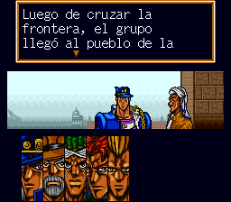
หลังข้ามพรมแดน คณะเดินทางมาถึงเมืองใหม่ในปากีสถาน
Mansion (คฤหาสน์)
- ซื้ออุปกรณ์ใหม่ให้ทีมก่อนเริ่มสำรวจ
- พูดกับชายที่ขวางประตู Bar (บาร์) แล้วคุยกับชายร่างใหญ่ข้างประตู Mansion
- เลือก Jotaro เพื่อเข้ารับการทดสอบความกล้าในคฤหาสน์
- สู้กับ Vampire 2 ตัว ตัวละ HP 60
- ลงไป B2 สู้กับ Vampire 3 ตัว
- ค้นหาหีบสมบัติเพื่อรับ Cobra Key (กุญแจงูเห่า)
Bar (บาร์)
- กลับไปพูดกับชายหน้าบาร์และเข้าไปด้านใน
- พูดคุยกับ D'arby (ดาร์บี้) ชายที่สวมเสื้อกั๊กสีแดง
- เล่นเกมทายไพ่ Spade (โพดำ) กับสมาชิกในทีม
- ในรอบที่ 5 ไม่ว่า Jotaro จะเลือกไพ่ใบใด ก็จะชนะเกมโดยอัตโนมัติ
- ออกจากบาร์ เดินตะวันออก ขึ้นเหนือ และใช้ SEARCH กับชายชุดขาว
- เข้า Big Mansion (คฤหาสน์ใหญ่) ที่อยู่ใกล้กัน
Big Mansion (คฤหาสน์ใหญ่) และ SPW (หน่วย SPW)
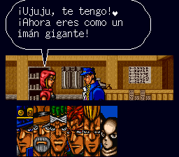
"¡Ujuju, te tengo! ¡Ahora eres como un imán gigante!" — ฉากเหตุการณ์ในคฤหาสน์ใหญ่
- ขึ้นไป 2F เข้าห้อง และพูดคุยกับ Hol Horse (โฮล ฮอร์ส)
- กลับลง 1F ผ่านห้องทางขวาเพื่อสู้กับ Zombie (ซอมบี้) 2 ตัว
- เดินขวาสุดแล้วสู้กับ Zombie 3 ตัว HP 93
- ลง B1 เพื่อสู้กับ Justice (จัสติส) HP 230
- ให้ Jotaro ใช้ FLASH ก่อน แล้วให้ทุกคนใช้ ATTACK
- ออกจากคฤหาสน์ เดินทางไป SPW และสู้กับ Lovers (เลิฟเวอร์ส) HP 150
- ให้ Kakyoin ใช้ FLASH
- กลับไป Big Mansion ที่ชั้น 2 ค้นหาหีบเพื่อเริ่มเหตุการณ์กับ Cameo (คาเมโอ)
- ต่อสู้กับ Jotaro 3 คน, Hol Horse และ Judgement (จัดจ์เมนต์) HP 200
- หลังชนะ กลับไป SPW และพูดคุยกับชายคนเดิมเพื่อเดินทางสู่ Egypt
Egypt (อียิปต์)
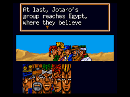
"At last, Jotaro's group reaches Egypt, where they believe..." — คณะเดินทางมาถึงอียิปต์ในที่สุด
Desert (ทะเลทราย)
- ขี่ Camel (อูฐ) ไปทางตะวันออกจนเห็น Sun (ดวงอาทิตย์) บนท้องฟ้า
- ใช้ SEARCH กับ Sun เพื่อสู้กับ Sun HP 110
- ให้ Avdol ใช้ FLASH ก่อน แล้วให้ทุกคนใช้ ATTACK
Old Temple (วิหารโบราณ)
- จาก Town (เมือง) เดินตะวันออกสุด ขึ้นเหนือ แล้วเดินตะวันออกเพื่อเข้า Old Temple
- สู้กับ Man of Granulation (แมน ออฟ แกรนูเลชัน) 3 ตัว ตัวละ HP 85
- เดินไปห้องด้านขวาและใช้ SEARCH กับสวิตช์บนผนังเพื่อเปิดเส้นทาง
- กลับสู่โถงหลัก เข้าห้องด้านซ้าย เดินผ่านห้องถัดไป และค้นหาหีบด้านขวา
- ได้รับ Anubis' Sword (ดาบของ Anubis)
- เดินซ้ายเพื่อสู้กับ Iggy (อิกกี้) HP 110 เมื่อชนะ Iggy จะเข้าร่วมทีม
- ออกจากวิหาร ตอบ Yes (ใช่) เพื่อมอบดาบให้ Merchant (พ่อค้า)
- เดินซ้ายเพื่อสู้กับ Merchant และรับ Anubis' Sword กลับคืนมา
Weapon Shop (ร้านอาวุธ) และ Library (ห้องสมุด)
- ไป Weapon Shop แล้วคุยกับชายหลังเคาน์เตอร์เพื่อต่อสู้กับ Chaka (ชาก้า) HP 295
- ให้ Kakyoin ใช้ FLASH ก่อน แล้วใช้ ATTACK ด้วยสมาชิกทั้งทีม
- หลังชนะ ควรซื้ออุปกรณ์ใหม่ให้พร้อม
- เดินไปหน้า Library คุยกับชายด้านซ้ายของประตู และตอบ Yes
- เดินไป Aisle 7-8 (ชั้นหนังสือทางเดิน 7-8) แล้วกลับมายังบริเวณชั้นหนังสือ
- สู้กับ Alessi (อาเลสซี่) โดยให้สมาชิกทุกคนใช้ SPEAK ต่อเนื่อง
Desert: การต่อสู้กับ Geb (เก็บ)
- หลัง Iggy กลับเข้าทีม เดินตะวันออกตามเส้นทาง
- พบ Geb ครั้งที่ 1 และ 2: ศัตรูจะหนีในเทิร์นที่ 3
- พบ Geb ครั้งที่ 3: ให้ Kakyoin ใช้ ESCAPE
- จากนั้นสู้กับ Geb ตัวจริง HP 150 จนชนะ
Cairo Town (เมืองไคโร)
Weapon Shop (ร้านอาวุธ) และ Bar (บาร์)
- เข้า Weapon Shop ทางตะวันออกของเมือง จะมีเหตุการณ์เกิดขึ้น
- ใช้ SEARCH กับ Ornament (ของประดับ) บนเคาน์เตอร์
- ออกจากร้าน เดินตะวันตก ขึ้นเหนือ แล้วเดินตะวันออกเพื่อเข้า Bar
- เดินขวาและเข้าห้องน้ำ ใช้ SEARCH กับหีบเพื่อรับ Mansion Key (กุญแจคฤหาสน์)
- สามารถเก็บเลเวลได้ด้วยการพูดกับชายหลังเคาน์เตอร์ ตอบ Yes และจ่าย $300 เพื่อต่อสู้กับ Vampire
Mysterious Mansion (คฤหาสน์ลึกลับ)
- ออกจาก Bar เดินตะวันออกและเข้า Mysterious Mansion
- เดินขวา ใช้ SEARCH กับ Ornament ด้านซ้ายของประตู แล้วลงไป B1
- ที่ B1 เดินขวา ลงไป B2 จากนั้นเดินซ้ายและลงไป B3
- ที่ B3 เดินขวาเพื่อต่อสู้กับ Emperor HP 185 และ Bast (บาสต์) HP 180
- หลังชนะ เดินตะวันออกไปหน้าทางเข้า Dio's Mansion (คฤหาสน์ของ Dio)
- ก่อนเข้า ต้องสู้กับ Horus (ฮอรัส) HP 250
- ให้สมาชิกทุกคนใช้ GUTS ต่อเนื่องจนชนะ
Dio's Mansion (คฤหาสน์ของ Dio)
Island Area (พื้นที่เกาะ)
- จากทางเข้าคฤหาสน์ เดินขวาและเข้าประตูเปิดบานแรกจากซ้าย
- ในห้องถัดไป เข้าประตูเปิดบานที่ 2 จากซ้าย
- เข้าประตูเปิดที่อยู่ใกล้ด้านซ้ายเพื่อไปยัง Beach Area (พื้นที่ชายหาดบนเกาะ)
- ใช้ SEARCH กับ Television (โทรทัศน์) เพื่อต่อสู้กับ Atum (อาทัม) HP 180
- เมื่อชนะ จะได้รับ Island Door Key (กุญแจประตูเกาะ)
- เดินตะวันตกและผ่านประตูเพื่อวาร์ปกลับไปหน้าคฤหาสน์
Kenny G (เคนนี่ จี) และเส้นทาง B1 - B2
- กลับเข้าคฤหาสน์ เดินขวาไปยังประตูเปิดบานที่ 3 และ 4
- ใช้ SEARCH กับรอยบุ๋มขนาดใหญ่บนผนังระหว่างประตูทั้งสอง
- พบ Kenny G ครั้งแรก ซึ่งจะหนีไปเองในเทิร์นแรก
- เดินซ้าย ลงบันไดไป B1 แล้วเข้าประตูขวาเพื่อลง B2
- ที่ B2 เข้าประตูซ้าย สู้กับ Vampire 2 ตัว แล้วออกจากห้องเพื่อสู้กับ Vampire 3 ตัว
- กลับขึ้น B1 แล้วเข้าประตูซ้ายเพื่อลง B2 อีกเส้นทาง
- เดินขวา เข้าประตูขวา และเดินขวาสุดเพื่อพบ Vanilla Ice (วานิลลา ไอซ์) ซึ่งจะหนีในเทิร์นที่ 3
- กลับไป B1 เข้าประตูขวาลง B2 แล้วเข้าประตูขวาอีกครั้ง
- ใช้ SEARCH กับ Kenny G เพื่อต่อสู้กับ Kenny G HP 60
Vanilla Ice (วานิลลา ไอซ์)
- กลับไปยัง 1F เดินขวาเพื่อพบ Vanilla Ice อีกครั้ง
- ให้ Avdol ใช้ FLASH เพื่อจบศึกเนื้อเรื่อง
- ขึ้นบันไดไป 2F เดินซ้ายเพื่อสู้กับ Vanilla Ice HP 700
- ให้สมาชิกทุกคนใช้ GUTS ต่อเนื่อง
- ใช้ไอเทมฟื้น HP และ MP ทันทีเมื่อทีมตกอยู่ในสถานการณ์อันตราย
Dio (ดีโอ): ศึกเนื้อเรื่อง
- หลังชนะ Vanilla Ice เดินซ้ายสุดและขึ้นไป 3F
- เดินซ้ายเพื่อดูเหตุการณ์ แล้วเดินซ้ายต่อเพื่อสู้กับ Dio ครั้งแรก
- ให้ Avdol และ Kakyoin ใช้ FLASH
- หลังจบศึกจะได้รับ Treasure Chest Key (กุญแจหีบสมบัติ)
- เดินขวาเข้าห้องถัดไป แล้วค้นหาหีบเพื่อรับ Time Cap (หมวกหยุดเวลา)
- สวม Time Cap ให้ Jotaro ทันที
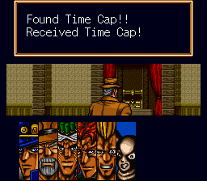
"Found Time Cap!! Received Time Cap!!" — ไอเทมสำคัญก่อนศึกสุดท้าย
Final Boss: Dio (ดีโอ)
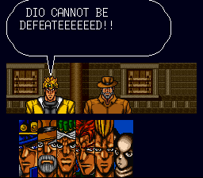
"DIO CANNOT BE DEFEATEEEEEED!!" — คำท้าทายก่อนเริ่มศึกสุดท้าย
เตรียมตัวก่อนสู้บอสสุดท้าย
แนะนำให้สมาชิกในทีมมีเลเวลประมาณ LV14 และกลับไปซื้อไอเทมฟื้นฟูให้เพียงพอก่อนเริ่มการต่อสู้
| ไอเทม | ราคา | ผลลัพธ์ |
|---|
| Stimulant (ยากระตุ้น) | $5,000 | ชุบชีวิตสมาชิกที่หมดสติให้กลับมาต่อสู้ได้ |
| Panacea (ยาครอบจักรวาล) | $2,500 | ฟื้น HP และ MP ของสมาชิกทั้งทีมเต็มจำนวน |
Dio (ดีโอ) — HP 1000
- กลับไปยัง 3F แล้วเดินไปทางซ้ายเพื่อเริ่มการต่อสู้สุดท้าย
- ใช้ ATTACK (โจมตี) เป็นการโจมตีหลัก
- ใช้ GUTS (ฮึดสู้) เพื่อเพิ่มพลังโจมตีและเร่งทำความเสียหาย
- ใช้ FLASH (โจมตีจุดอ่อน) เมื่อมี MP เพียงพอและจังหวะเหมาะสม
- ใช้ Panacea (ยาครอบจักรวาล) เมื่อ HP หรือ MP ของทีมลดลงมาก
- ใช้ Stimulant (ยากระตุ้น) เพื่อชุบสมาชิกที่หมดสติทันที
- อย่าปล่อยให้สมาชิกหลักล้มพร้อมกัน เพราะ Dio สร้างความเสียหายได้รุนแรงและการต่อสู้ค่อนข้างยาว
เมื่อเอาชนะ Dio ได้สำเร็จ จะเข้าสู่บทสรุปและจบเกม
3. สเตตัสเริ่มต้น & ค่า EXP เลื่อนเลเวล
สเตตัสตั้งต้นของตัวละครแต่ละคนตอนเข้าร่วมทีม (Iggy ไม่มีข้อมูลตั้งต้นเพราะเข้าทีมกลางเกมด้วยสเตตัสตามเนื้อเรื่อง — ดูค่าช่วงที่เจอเป็นศัตรูได้ในหัวข้อ 10)
| ค่า | Jotaro | Joseph | Avdol | Kakyoin | Polnareff |
|---|
| Lv เริ่มต้น | 1 | 4 | 4 | 3 | 5 |
| EXP เริ่มต้น | 0 | 141 | 96 | 60 | 235 |
| HP | 50 | 58 | 68 | 55 | 72 |
| MP | 50 | 85 | 82 | 60 | 92 |
| AT | 5 | 9 | 14 | 7 | 17 |
| DF | 3 | 12 | 11 | 9 | 14 |
| ST | 50 | 50 | 50 | 50 | 50 |
| JG | 2 | 4 | 5 | 3 | 3 |
| AC | 4 | 4 | 3 | 3 | 6 |
| CO | 3 | 3 | 8 | 3 | 3 |
| CP | 2 | 5 | 3 | 20 | 4 |
| PS | 3 | 20 | 4 | 2 | 2 |
EXP ที่ต้องใช้เพื่อเลื่อนเลเวล
| เลเวล | Jotaro | Joseph | Avdol | Kakyoin | Polnareff | Iggy |
|---|
| Lv 2 | 20 | – | – | – | – | – |
| Lv 3 | 58 | – | – | – | – | – |
| Lv 4 | 118 | – | – | 125 | – | – |
| Lv 5 | 212 | 251 | 171 | 224 | – | – |
| Lv 6 | 349 | 398 | 340 | 364 | 385 | – |
| Lv 7 | 534 | – | – | – | 589 | – |
| Lv 13 | – | 4265 | – | – | – | 3916 |
| Lv 14 | 5015 | – | 5393 | 5101 | 5180 | – |
ช่องที่เป็น “–” คือไม่มีข้อมูลในเอกสารต้นฉบับ (บันทึกไม่ครบทุกเลเวล)
4. สถิติศัตรู & บอสทั้งหมด
ตารางสถิติศัตรูและบอสแทบทุกตัวในเกม เรียงตามลำดับที่เจอในเนื้อเรื่อง (ตั้งแต่ Japan จนถึง Dio) ใช้เทียบตอนวางแผนต่อสู้หรือเช็คว่าเลเวลตัวเองพอไหว
| ชื่อศัตรู/บอส | HP | MP | AT | DF | CO | PS | EXP | เงิน ($) |
|---|
| Delinquents I (นักเรียนเกเร) | 30 | 28 | 3 | 1 | – | – | 5 | 210 |
| Nurse Joy | N/A | N/A | 2 | 255 | – | – | 15 | 200 |
| Noriaki Kakyoin | 60 | 60 | – | – | – | – | 28 | 400 |
| Delinquents II | 35 | 50 | 5 | 5 | – | – | 9 | 330 |
| "Tower of Gray" | 100 | 70 | 8 | 10 | 3 | 10 | 33 | 460 |
| J.P. Polnareff | 180 | 92 | – | – | – | – | 34 | 600 |
| Vampire I | 40 | 80 | 7 | 10 | – | – | 8 | 300 |
| Captain Tennille | 100 | 110 | 24 | 6 | 18 | 5 | 35 | 540 |
| Forever | 150 | 94 | 24 | 20 | 4 | 3 | 35 | 540 |
| "Death Thirteen" | 70 | 100 | 22 | 15 | 8 | 8 | 38 | 590 |
| "High Priestess" | 180 | 50 | 26 | 18 | 7 | 6 | 40 | 600 |
| Devo the Cursed | 190 | 230 | 25 | 18 | 5 | 13 | 45 | 780 |
| Rubber Soul | 98 | 100 | 28 | 23 | 8 | 7 | 50 | 690 |
| "Hanged Man" | 120 | 110 | 30 | 26 | 6 | 10 | 58 | 870 |
| "Wheel of Fortune" (ครั้งที่ 1) | 110 | 126 | – | – | – | – | 30 | 10 |
| "Wheel of Fortune" (ครั้งที่ 2) | 300 | 126 | 30 | 21 | 7 | 6 | 33 | 860 |
| Vampire II | 60 | 68 | 20 | 13 | – | – | 23 | 100 |
| Zombie | 93 | 100 | 16 | 14 | – | – | 22 | 450 |
| Enya the Hag | 230 | 152 | 37 | 32 | 9 | 18 | 75 | 870 |
| Lovers | 150 | 80 | 37 | 33 | 10 | 8 | 77 | 510 |
| "Judgement" | 200 | 100 | 38 | 28 | 11 | 12 | 123 | 1,600 |
| "Sun" | 110 | 125 | 40 | 34 | 9 | 6 | 150 | 1,200 |
| Brainwashed Men | 85 | 220 | 31 | 25 | – | – | 100 | 9,000 |
| Iggy | 110 | 168 | – | – | – | – | 24 | 500 |
| Khan | 180 | 141 | – | – | – | – | 140 | 1,300 |
| Chaka | 295 | 165 | 43 | 33 | 13 | 12 | 178 | 1,600 |
| Alessi | 220 | 90 | 35 | 31 | 17 | 16 | 206 | 1,670 |
| N'Doul | 150 | 218 | 43 | 34 | 19 | 17 | 230 | 2,050 |
| Hol Horse | 185 | 94 | 43 | 34 | 12 | 8 | 187 | 2,700 |
| Mariah | 180 | 200 | 45 | 33 | 18 | 18 | 30 | 6,600 |
| Pet Shop | 250 | 525 | 80 | 42 | 21 | 16 | 315 | 7,830 |
| "Atum" | 180 | 188 | 65 | 44 | 10 | 10 | 220 | 5,500 |
| Vampire III | 100 | 226 | 29 | 26 | – | – | 36 | 300 |
| Kenny G | 60 | 172 | 0 | 30 | 14 | 16 | 210 | 6,800 |
| Vanilla Ice | 700 | 350 | 130 | 50 | 24 | 35 | 530 | 8,000 |
| DIO | 1000 | 1460 | 175 | 60 | 32 | 45 | 0 | 0 |
“–” = ไม่มีข้อมูล/ไม่มีผลกับสเตตัสนี้ · N/A = ตัวละครที่ไม่ได้ต่อสู้จริง (เช่น Nurse Joy)
5. อุปกรณ์สวมใส่
อุปกรณ์แต่ละคนมี 3 เทียร์ตามความแรงของร้านค้าในแต่ละประเทศ บวกไอเทมพิเศษเฉพาะตัว (Lucky Item) ที่ใช้เป็นเครื่องรางประจำตัว
| ระดับ | Jotaro | Joseph | Avdol | Kakyoin | Polnareff | Iggy |
|---|
| Tier 1 | Brave Chain ($100) | Aluminum Cap ($80) | Smart Hand ($120) | Leather Hat ($70) | Wisdom Bangle ($110) | Denim Turban ($100) |
| Tier 2 | Thunder Chain ($500) | Brass Cap ($400) | Flying Hand ($550) | Plumed Hat ($350) | Victory Bangle ($450) | Chain Turban ($480) |
| Tier 3 | Platinum Chain ($1,200) | Angel's Cap ($1,000) | Supreme Hand ($1,300) | Thorn Hat ($900) | Fire Bangle ($1,500) | Fire Turban ($1,300) |
| Lucky Item | Gold Coin ($2,000) | Charm ($100) | Royal Heirloom ($1,800) | Passport ($600) | Silver Coin ($1,500) | Jewel ($3,000) |
นอกจากนี้ยังมีชุดของ Guncannon/Guncannon อีก 3 คน (Harmony/Miracle/Rage Button · Wool/Metal/Cursed Uniform · Fused/Force/Strife Earrings · Plated/Stone/Silver Wrist · Conquest/Storm/Destruction Bell · Tin/Iron/Gold Collar) ตามข้อมูลร้านค้าในหัวข้อ 12 — ระบบอุปกรณ์แยกตามตัวละคร สวมแทนกันไม่ได้
ของพิเศษ Tier 4: Time Cap (หมวกหยุดเวลา) — ได้จากหีบใน Dio's Mansion เท่านั้น ไม่มีขาย สวมให้ Jotaro ก่อนสู้ Dio
6. ร้านค้าแต่ละประเทศ
ราคาสินค้าในร้านอาวุธ/เกราะ ร้านไอเทม และร้านหนังสือของแต่ละประเทศ (Misty = เมืองในปากีสถาน)
ร้านอาวุธ/เกราะ
| Japan | Calcutta (India) | Misty (Pakistan) | Desert (Egypt) | Cairo |
|---|
| Brave Chain $100 | Thunder Chain $500 | Thunder Chain $500 | Platinum Chain $1,200 | Platinum Chain $1,200 |
| Aluminum Cap $80 | Brass Cap $400 | Brass Cap $400 | Angel's Cap $1,000 | Angel's Cap $1,000 |
| Smart Hand $120 | Flying Hand $550 | Flying Hand $550 | Supreme Hand $1,300 | Supreme Hand $1,300 |
| Leather Hat $70 | Plumed Hat $350 | Plumed Hat $350 | Thorn Hat $900 | Thorn Hat $900 |
| Wisdom Bangle $110 | Victory Bangle $450 | Victory Bangle $450 | Fire Bangle $1,500 | Fire Bangle $1,500 |
| Denim Turban $100 | Chain Turban $480 | Chain Turban $480 | Fire Turban $1,300 | Fire Turban $1,300 |
| Harmony Button $50 | Miracle Button $500 | Miracle Button $500 | Rage Button $1,000 | Rage Button $1,000 |
| Wool Uniform $120 | Metal Uniform $600 | Metal Uniform $600 | Cursed Uniform $1,400 | Cursed Uniform $1,400 |
| Fused Earrings $90 | Force Earrings $420 | Force Earrings $420 | Strife Earrings $1,100 | Strife Earrings $1,100 |
| Plated Wrist $110 | Stone Wrist $500 | Stone Wrist $500 | Silver Wrist $1,250 | Silver Wrist $1,250 |
| – | – | – | Conquest Bell $100 | Storm Bell $450 |
| – | – | – | Storm Bell $450 | Destruction Bell $1,150 |
| – | – | – | Tin Collar $70 | Iron Collar $350 |
| – | – | – | Iron Collar $350 | Gold Collar $1,500 |
ร้านไอเทม/ยา
| Japan | Calcutta (India) | Misty (Pakistan) | Desert (Egypt) | Cairo |
|---|
| Tarot Card $20 | Tarot Card $20 | Tarot Card $20 | Tarot Card $20 | Tarot Card $20 |
| Supplement $100 | Wonder Drug $580 | Panacea $2,500 | Panacea $2,500 | Panacea $2,500 |
| Vitamin $90 | Sedative $450 | Herbs $320 | Restorative $5,000 | Restorative $5,000 |
| Ointment $20 | Vitamin $90 | VR Goggles $800 | Herbs $320 | Herbs $320 |
| Jasmine Leaf $20 | Ointment $20 | Gold Coin $2,000 | VR Goggles $800 | VR Goggles $800 |
| Pack of Smokes $1,000 | Supplement $100 | Silver Coin $1,500 | Pack of Smokes $1,000 | Supplement $100 |
| Passport $600 | Passport $600 | Charm $100 | Gold Coin $2,000 | Vitamin $90 |
| Small Coin $20 | Gold Coin $2,000 | Supplement $100 | Silver Coin $1,500 | Pack of Smokes $1,000 |
| Gold Coin $2,000 | Silver Coin $1,500 | Vitamin $90 | Charm $3,000 | Passport $600 |
| Silver Coin $1,500 | Jewel $3,000 | Restorative $5,000 | – | Gold Coin $2,000 |
| Charm $100 | Restorative $5,000 | – | – | Silver Coin $1,500 |
| Restorative $5,000 | – | – | – | Jewel $3,000 |
| – | – | – | – | Royal Heirloom $1,800 |
| – | – | – | – | Charm $100 |
ร้านหนังสือ (ไม่มีใน Japan และ Desert)
| Calcutta (India) | Misty (Pakistan) | Cairo |
|---|
| Crime Novel $800 | Survival Book $1,800 | Survival Book $1,800 |
| Weekly Paper $700 | Adventure Log $1,500 | Adventure Log $1,500 |
| Encyclopedia $1,000 | Crime Novel $800 | Crime Novel $800 |
| Jump Comic $200 | Weekly Paper $700 | Weekly Paper $700 |
| – | Encyclopedia $1,000 | Encyclopedia $1,000 |
| – | Jump Comic $200 | Strategy Guide $2,300 |
| – | – | Game Mag $2,100 |
| – | – | Jump Comic $200 |
7. ไอเทมทั้งหมด
ไอเทมฟื้นฟู
| ไอเทม | ราคา | ผล |
|---|
| Tarot Card | $20 | ปลดล็อกให้ใช้เมนู "Tarot" ได้ |
| Ointment | $20 | ฟื้น HP ตัวละคร 1 คน 25% ของ HP สูงสุด |
| Jasmine Leaf | $20 | ฟื้น MP ตัวละคร 1 คน 25% ของ MP สูงสุด |
| Supplement | $100 | ฟื้น HP ตัวละคร 1 คน 75% ของ HP สูงสุด |
| Vitamin | $90 | ฟื้น MP ตัวละคร 1 คน 75% ของ MP สูงสุด |
| Wonder Drug | $580 | ฟื้น HP ทั้งทีม 25% ของ HP สูงสุด |
| Sedative | $450 | ฟื้น MP ทั้งทีม 25% ของ MP สูงสุด |
| Herbs | $320 | ฟื้น HP & MP ตัวละคร 1 คน 50% ของค่าสูงสุด |
| Panacea | $2,500 | ฟื้น HP & MP ทั้งทีม 50% ของค่าสูงสุด |
| Restorative | $5,000 | ชุบชีวิตตัวละครที่หมดสติ 1 คนตามต้องการ |
ไอเทมนำโชค (Lucky Item ประจำตัว)
| ไอเทม | ราคา | เจ้าของ |
|---|
| Small Coin | $20 | ไอเทมนำโชคทั่วไป |
| Gold Coin | $2,000 | Jotaro |
| Charm | $100 | Joseph |
| Royal Heirloom | $1,800 | Avdol |
| Passport | $600 | Kakyoin |
| Silver Coin | $1,500 | Polnareff |
| Jewel | $3,000 | Iggy |
ไอเทมเพิ่มสเตตัสถาวร
| ไอเทม | ราคา | ผล |
|---|
| Jump Comic | $200 | ลด Stress ตัวละคร 1 คนลง 10 |
| Pack of Smokes | $1,000 | ลด Stress ตัวละคร 1 คนลง 15 |
| VR Goggles | $800 | ลด Stress ทั้งทีมลง 10 |
| Survival Book | $1,800 | เพิ่มค่า Judgment |
| Adventure Log | $1,500 | เพิ่มค่า Action |
| Crime Novel | $800 | เพิ่มค่า Concentration |
| Newspaper | $700 | เพิ่มค่า Cooperation |
| Encyclopedia | $1,000 | เพิ่มค่า Persuasion |
| Game Mag | $2,100 | เพิ่มค่า Action & Concentration |
| Strategy Guide | $2,300 | เพิ่มค่า Judgment & Cooperation |
กุญแจ & ไอเทมสำคัญ
| ไอเทม | ใช้ทำอะไร |
|---|
| Room Key | เปิดห้อง 201/202 โรงแรมใน Calcutta |
| No.301 Key | เปิดห้อง 301 โรงแรมใน Calcutta |
| Roof Key | ขึ้นดาดฟ้าโรงแรมใน Calcutta |
| Treasure Warehouse Key | เข้าโกดังสมบัติใน India |
| Cobra Key | เข้าบาร์ใน Pakistan |
| Mansion Key | เข้า Mysterious Mansion ใน Cairo |
| Anubis' Sword | "ดาบที่สิงร่างคนถือ" — ใช้เป็นเงื่อนไขเนื้อเรื่องช่วง Old Temple |
| Island Door Key | เปิดประตูออกจากเกาะลวงตาของ Telence (Atum) |
| Strongbox Key | เปิดหีบ Time Cap ของ Dio |
| Dio's Letter | ใช้เดินทางจาก India ไป Pakistan |
ของสะสมอื่นๆ ที่ไม่มีผลระบุชัดเจน (หนังสือ/ของกระจุกกระจิกเก็บได้ระหว่างทาง): Stimulant, Polaroid Camera, Occult Book, Coffee Gum, Miracle Pills, Black Pills, Sketchy Pills, Iced Tea, Whiskey, Guide Book, Old Album, Illustrated Book, Self-Help Book, Shonen Manga, Archaeology, Almanac, Novel, Mystery Book, Suspicious Book, Picture Book, Catalog, Absinthe
8. ไพ่ทาโรต์ทั้งหมด
ไพ่ที่จั่วได้ก่อนแต่ละครั้งจะสู้ (หมวด 1) มี 22 ใบหลัก + ไพ่พิเศษเทพอียิปต์อีก 9 ใบ (E1–E9) ที่เจอเฉพาะช่วง Egypt
| # | การ์ด | ชื่อ | ผล |
|---|
| 00 | 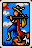 | The Fool | ฟื้น MP ทั้งทีม |
| 01 | 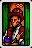 | The Magician | ฟื้น HP ทั้งทีม |
| 02 | 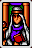 | The High Priestess | เปลี่ยน Biorhythm |
| 03 | 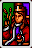 | The Empress | เพิ่ม Defense ตัวละครที่จั่ว |
| 04 | 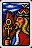 | The Emperor | ฟื้น HP ตัวละครที่จั่ว |
| 05 | 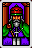 | The Hierophant | เพิ่ม Defense ทั้งทีม |
| 06 | 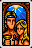 | The Lovers | ฟื้น MP ตัวละครที่จั่ว |
| 07 | 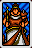 | The Chariot | เพิ่ม Attack ทั้งทีม |
| 08 | 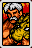 | Strength | เพิ่ม Attack ตัวละครที่จั่ว |
| 09 | 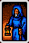 | The Hermit | ลด Stress ทั้งทีม |
| 10 | 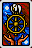 | Wheel of Fortune | ลด Stress ตัวละครที่จั่ว |
| 11 | 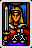 | Justice | ฟื้น HP & MP ตัวละครที่จั่ว |
| 12 | 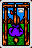 | The Hanged Man | เพิ่ม Stress ทั้งทีม (การ์ดร้าย) |
| 13 | 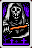 | Death | ลด HP ทั้งทีม (การ์ดร้าย) |
| 14 | 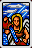 | Temperance | ลด Defense ทั้งทีม (การ์ดร้าย) |
| 15 | 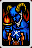 | The Devil | ลด MP ทั้งทีม (การ์ดร้าย) |
| 16 | 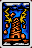 | The Tower | ลด Attack ทั้งทีม (การ์ดร้าย) |
| 17 | 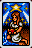 | The Star | ฟื้น HP & MP ทั้งทีม |
| 18 | 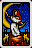 | The Moon | เพิ่ม Stress ตัวละครที่จั่ว (การ์ดร้าย) |
| 19 | 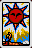 | The Sun | ลด Judgment ทั้งทีม (การ์ดร้าย) |
| 20 | 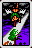 | Judgment | – |
| 21 | 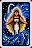 | The World | ลด HP & MP ทั้งทีม (การ์ดร้าย) |
| E1 | 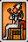 | Osiris | เพิ่ม Judgment ตัวละครที่จั่ว |
| E2 | 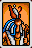 | Horus | ลด HP ตัวละครที่จั่ว (การ์ดร้าย) |
| E3 | 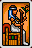 | Geb | ลด Attack & Defense ทั้งทีม (การ์ดร้าย) |
| E4 | 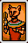 | Bastet | เพิ่ม Action ตัวละครที่จั่ว |
| E5 | 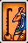 | Sethan | ลด Defense ตัวละครที่จั่ว (การ์ดร้าย) |
| E6 | 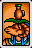 | Khnum | ลด Action ทั้งทีม (การ์ดร้าย) |
| E7 | 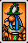 | Tohth | ลด Attack & Defense ตัวละครที่จั่ว (การ์ดร้าย) |
| E8 | 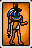 | Anubis | ลด MP ตัวละครที่จั่ว (การ์ดร้าย) |
| E9 | 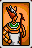 | Atum | ลด HP & MP ตัวละครที่จั่ว (การ์ดร้าย) |
“การ์ดร้าย” = ไพ่ที่ให้ผลลบกับทีมเรา ดวงไม่ดีตอนจั่วได้ก็ต้องรับสภาพเทิร์นนั้นไป